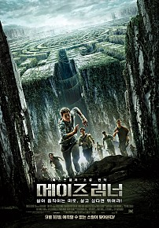
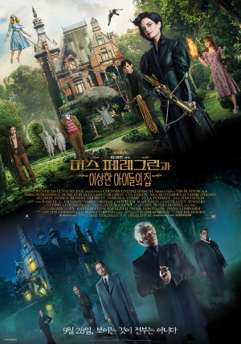
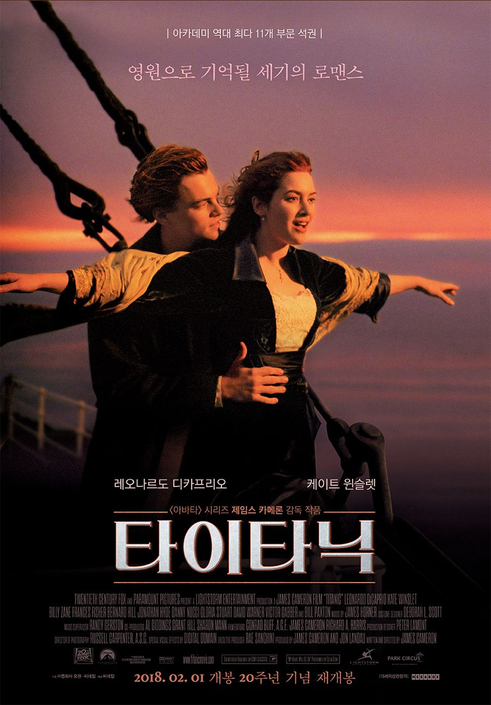
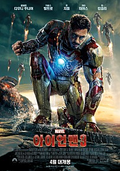

| 순위 | 제목 | 포스터 | 줄거리 | 바로가기 |
|---|---|---|---|---|
| 1 | 메이즈러너 |  |
삭제된 기억, 거대한 미로로 둘러싸인 낯선 공간 모든 기억이 삭제된 채 의문의 장소로 보내진 ‘토마스’. ‘토마스’는 미로에 갇힌 그곳에서 자신과 같은 상황의 사람들을 만난다. 그들은 매일 밤 살아 움직이는 미로에서 정체를 알 수 없는 죽음의 존재와 대립하며, 지옥으로부터 빠져나갈 탈출구인 지도를 완성해 나간다. 그러던 어느 날, 미로의 문이 열리고 그들은 마지막 선택의 기로에 놓이게 되는데… |
클릭 |
| 2 |
미스페레그린과 이상한 아이들의 집 |
 |
할아버지의 죽음의 단서를 쫒던 ‘제이크’ 는 시간의 문을 통과해 놀라운
비밀과 마주한다. 시간을 조정하는 능력을 가진 ‘미스 페레그린’ 과 그녀의 보호아래 무한 반복되는 하루를 사는 ‘특별한 능력의 아이들’, 그리고 그들을 사냥하는 보이지 않는 무서운 적 ‘할로게스트’ 미스 페레그린과 제이크를 비롯한 아이들은 살아남기 위해 ‘할로게스트’ 에 맞서야 한다. |
클릭 |
| 3 | 타이타닉 |  |
우연한 기회로 티켓을 구해 타이타닉호에 올라탄 자유로운 영혼을 가진
화가 ‘잭’은 막강한 재력의 약혼자와 함께 1등실에 승선한 ‘로즈’에게 한눈에 반한다. 진실한 사랑을 꿈꾸던 ‘로즈’ 또한 생애 처음 황홀한 감정에 휩싸이고, 둘은 운명 같은 사랑에 빠지는데… |
클릭 |
| 4 | 위대한 쇼맨 |
불가능한 꿈, 그 이상의 쇼! 쇼 비즈니스의 창시자이자, 꿈의 무대로 전세계를 매료시킨 남자 ‘바넘’의 이야기에서 영감을 받아 탄생한 오리지널 뮤지컬 영화 <위대한 쇼맨>. |
클릭 | |
| 5 | 아이언맨3 |  |
<어벤져스> 뉴욕 사건의 트라우마로 인해 영웅으로서의 삶에 회의를
느끼는 토니 스타크. 그가 혼란을 겪는 사이 최악의 테러리스트 만다린을 내세운 익스트리미스 집단 AIM이 스타크 저택에 공격을 퍼붓는다. 이 공격으로 그에게 남은 건 망가진 수트 한벌 뿐. 모든 것을 잃어버린 그는 다시 테러의 위험으로부터 세계와 사랑하는 여인을 지켜내야 하는 동시에 머릿속을 떠나지 않던 한가지 물음의 해답도 찾아야만 한다. 과연 그가 아이언맨인가? 수트가 아이언맨인가? |
클릭 |
이름 :
본인 취향 영화 🎬